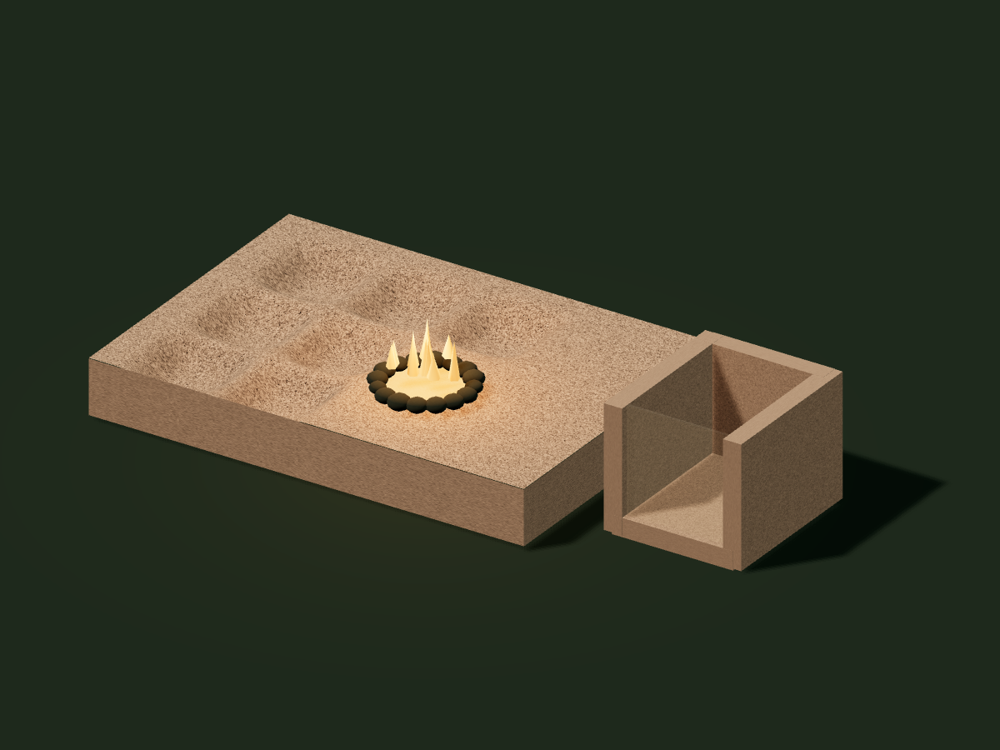

Repeated scoop-shaped depressions
Repeated treatment and removal of bounded patches could produce a family of depressions.
Still to explainTheir form and residues must be compared with pounding, thermal damage, and other quarrying processes.
STUDY 05 / Aswan · Egypt
Heat. React. Cool. Remove. Repeat.

FOLLOW THE MAKING
STAGE 01
Fóti proposes a natron-based treatment of granite. The highlighted patch identifies the proposed reaction zone; it is not a reconstructed ancient apparatus.
ABOUT THIS MODELA proposed cycle, not a chemical or thermal simulation. Color is explanatory; removal rate, temperatures, and pit dimensions are not inferred.
THE EXPLANATORY IDEA
Explore Fóti’s proposed natron treatment: a heated surface reaction, removal of the cooled layer with a pounder, and a separate settling stage.
Repeated treatment and removal of bounded patches could produce a family of depressions.
Still to explainTheir form and residues must be compared with pounding, thermal damage, and other quarrying processes.
A surface treatment could change what the pounder has to remove. It offers a specific comparison experiment.
Still to explainThe Marčiš study measured mechanical pounding. Its results do not establish chemical treatment or supply its removal rate.
Fóti interprets some shafts as settling spaces for a silicate-bearing liquid.
Still to explainThe shape of a pit alone cannot establish its use; field context and residues are needed.
FROM POSSIBILITY TO EVIDENCE
Fóti connects the proposed process with a reinterpretation of a workshop scene in Rekhmire’s tomb. The usual reading is metalworking; the image does not by itself identify a natron-on-granite process.
Mechanical quarrying with pounders, potentially alongside other treatments, remains the comparison. Experiments need matched stone and a complete accounting of heating and preparation time.
Compare untreated pounding, heating alone, and the proposed chemical treatment. Measure volume removed per total labor-hour, fuel, residues, and surface shape. Keep cooling and preparation time in the calculation.
Proponent book, especially chapters 4 and 9. Consulted in the project research library; not a peer-reviewed validation. No book images or extended excerpts are reproduced.
Photogrammetric measurement of granite removal using dolerite pounders. A mechanical baseline, not an experiment on Fóti’s proposed treatment.
Museum context for the tomb’s workshop imagery and its conventional interpretation.
Historical quarry observations and the pounding account; includes a different interpretation of the shafts.
The companion evidence dossier, competing explanations, and proposed research. The atlas illustrates mechanisms; the case tracks the evidence.